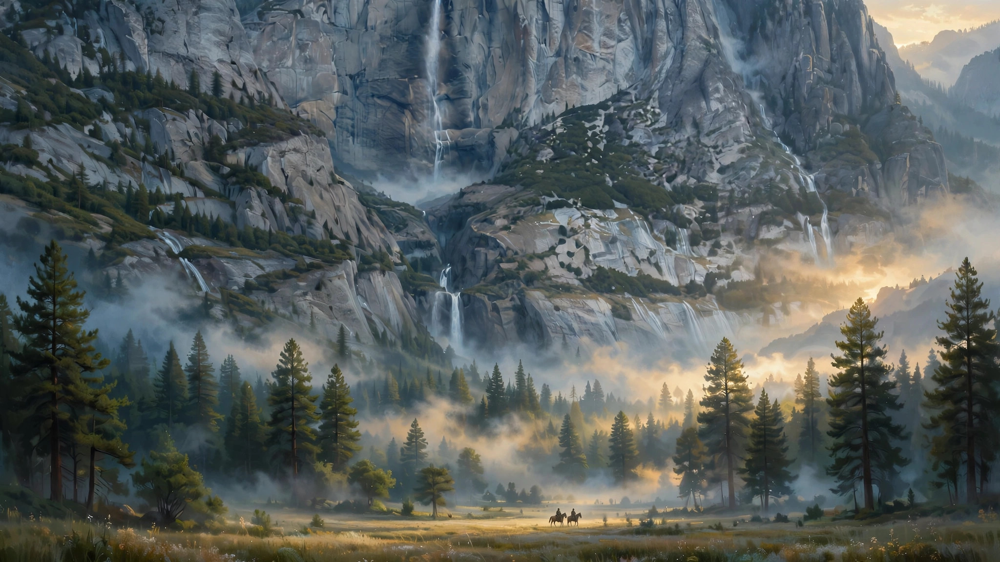
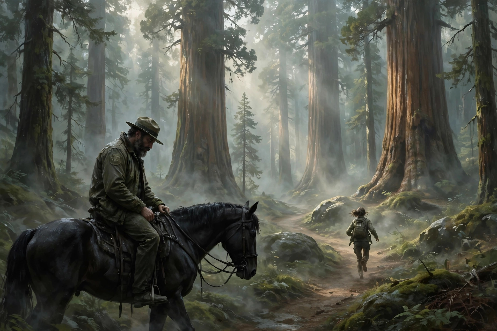

在“优胜美地”审视人性
最近利用晚上短暂休息时间看完了一部新美剧，奈飞的《荒境狂途》（Untamed）。看样子是单季剧，因为季终故事就基本讲完了，感觉更像是一部分集播出的电影。
故事几句话就可以说完没啥特别，属于典型的“小镇悬疑/探案剧”。整体叙事谈不上精彩，但绝对不算难看。因为本剧有一个突出的优点，那就是剧里的风景真的美不胜收，是闭着眼睛截屏就可以当电脑壁纸的那种美。有时看着看着剧就醉心于里面的风景，恍惚间觉得是在看国家地理或者BBC的自然纪录片，差点忘了剧情在讲什么。也难怪，本剧集取景地在著名的优胜美地国家公园（瞧这名儿起得多好，自带广告）。可惜版权原因，没法在这里贴出来让各位感受一下。 自然风景爱好者强烈推荐看这部剧，风光纪录片送悬疑故事，夫复何求？顺便感慨一下，美剧的制作越来越精良了，电视剧越看越像电影的质感。讽刺的是，好莱坞电影大片倒是一年不如一年，集体摆烂。难道，这是电视剧再次要取代电影的节奏么（电视剧刚诞生时有人提出过这种担心）？看不懂。

回到剧集。简单讲下剧情（剧透警告）：先介绍男女主及背景。男主是国家公园的一名资深联邦警探，中年大叔（但绝不油腻），眼神忧郁，络腮胡，身材倍棒，一身广告模特范儿。女主是一名从洛杉矶调来的年轻警探，其貌不扬，第一眼看上去是菜鸟，但其实胆大心细。继续讲男女主的背景。男主原来有个幸福的家庭，与前妻育有一子。但儿子在很小时在公园里不幸被坏人杀害。男主悲痛之余一直自责没有照顾好儿子，很难从丧子之痛中走出来。万念俱灰的他没办法继续维持与前妻的婚姻。前妻后来再婚。双方还保持友好的联系。女主与前夫原本都是洛杉矶警局的警察，但前夫沦为瘾君子和败类。女主为了年幼的孩子毅然出走，选择调动到远离城市的国家公园。由于发生在国家公园里的一起杀人案，素昧平生的男女主成为搭档。
在讲接下来的剧情走向之前先插一句，在扑朔迷离的探案过程中穿插着男女主各自家庭的一些纠葛，还有他们之间从排斥、陌生到默契的搭档过程。一般这种“男女搭配干活不累”的设定，总会让观众自然而然地想到两人之间会产生chemistry，进而发展出感情。但是，本剧不走平常路，硬是让这两位成为纯粹的革命战友。偏不让你磕CP，惊喜不，意外不？幸好，男主女从气质长相上的确没啥CP感，没发展出感情倒也没啥遗憾。但这种似是而非的编排，如果不是故意的话，还是让人感觉怪怪的。

接下来继续讲探案。其实这剧的探案过程略无聊，既不曲折，也缺乏意外或反转。结局有点小反转，但太俗套了，反而让这种反转显得很弱。反派也坏得很普通。看来天下渣男的渣法都是一样的，这么多年了，还是有新人忘旧人，负心薄情对至亲痛下杀手这些，毫无新意。
前面提到过，本剧的一大突出优点就是风光绝美。每当我看到无聊的剧情想快进时，一转场绝美的高山、峡谷、溪流、密林扑面而来，让我沐浴在大自然的怀抱中不能自拔。别的悬疑剧是靠推理、反转来吸引观众看下去，而本剧另辟蹊径，让风光一路抚慰我们因剧情无聊而受到的伤害。
在优美的风光里我们能感受清新的微风和温暖的阳光，忘掉世俗的一切烦恼。但旅游需要时间和钱，是奢侈品。看风光纪录片是个不错的替代方案。但老看国家地理和BBC也会无聊。怎么办？《荒境狂途》给出了答案，虽然这个答案不算完美，但至少是个新思路。